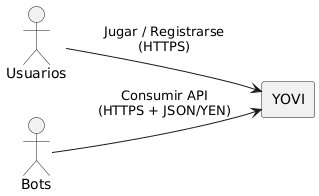
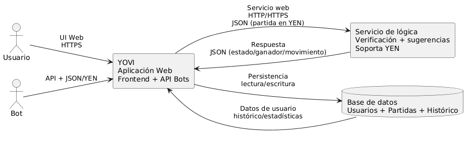

About arc42
arc42, the template for documentation of software and system architecture.
Template Version 8.2 EN. (based upon AsciiDoc version), January 2023
Created, maintained and © by Dr. Peter Hruschka, Dr. Gernot Starke and contributors. See https://arc42.org.
1. Introducción y Metas
Y es un juego de tablero abstracto para dos personas, jugado sobre un tablero triangular formado por casillas hexagonales. El objetivo es que, por turnos, cada jugador coloque fichas de su color hasta conseguir una cadena conectada de sus fichas que toque los tres lados del triángulo.Para lograr este objetivo se ha propuesto una solucion que consta de dos partes:
-
Una aplicación Web que ofrecerá a los usuarios la posibilidad de jugar a diferentes juegos Y, que estará implementada en Typescript. Esta aplicación también ofrecerá un API externo que permitirá que sea utilizada por bots.
-
Un módulo implementado en Rust que permitirá chequear si una partida ha sido ganada o no, así como sugerir el siguiente movimiento. Este módulo ofrecerá un interfaz de servicio web básico para que pueda ser invocado por la aplicación web.
1.1. Vista general de los requisitos
Construir una plataforma web para jugar partidas del juego Y con soporte de usuarios, historial y una API para bots, apoyada por un módulo de lógica en Rust para validar formato YEN y verificar victoria.
1.1.1. MÓDULO 1: APLICACIÓN WEB (TYPESCRIPT)
RF01 - Gestión de Usuarios.
-
RF01.1: El sistema permitirá el registro de nuevos usuarios con email y contraseña.
-
RF01.2: El sistema permitirá el inicio de sesión de usuarios registrados.
-
RF01.3: El sistema mantendrá sesiones activas del usuario durante el uso.
-
RF01.4: El sistema permitirá a los usuarios cerrar sesión.
RF02 - Interfaz de Juego
-
RF02.1: El sistema proporcionará una interfaz web interactiva para jugar partidas de juegos tipo Y.
-
RF02.2: La interfaz mostrará el tablero de juego actualizado en tiempo real.
-
RF02.3: El sistema permitirá a los usuarios realizar movimientos mediante clics en el tablero.
-
RF02.4: La interfaz mostrará el turno actual del jugador.
-
RF02.5: El sistema notificará visualmente el resultado de la partida (victoria/derrota/empate).
RF03 - Historial de Partidas
-
RF03.1: El sistema almacenará el historial de partidas completadas por cada usuario.
-
RF03.2: El sistema permitirá a los usuarios consultar sus partidas anteriores.
-
RF03.3: El sistema mostrará estadísticas básicas
-
RF03.3.1: El sistema mostrará las partidas ganadas
-
RF03.3.2: El sistema mostrará las partidas perdidas
-
RF03.3.3: El sistema mostrará las partidas empatadas
-
RF03.3.4: El sistema mostrará el tiempo total de juego
-
RF04 - API Externa para Bots
-
RF04.1: El sistema expondrá una interfaz para permitir la integración con bots
-
RF04.2: La API requerirá autenticación para las peticiones de los bots.
-
RF04.3: La API permitirá crear nuevas partidas como bot.
-
RF04.4: La API permitirá realizar movimientos en partidas existentes.
-
RF04.5: La API devolverá el estado actual de la partida en formato YEN.
1.1.2. MÓDULO 2: MÓDULO DE LÓGICA (RUST)
RF05 - Verificación de Victoria
-
RF05.1: El módulo recibirá una representación de partida en formato YEN y determinará si existe un ganador.
-
RF05.2: El módulo identificará qué jugador ha ganado la partida.
-
RF05.3: El módulo detectará condiciones de empate o tablas.
-
RF06 - Servicio Web
-
RF06.1: El módulo permitirá verificar si una partida ha sido ganada.
-
RF06.2: Todas las respuestas del servicio serán en formato JSON.
-
RF07 - Procesamiento de Formato YEN
-
RF07.1: El módulo interpretará correctamente las partidas codificadas según la notación YEN.
-
RF07.2: El módulo validará que la notación YEN recibida sea correcta sintácticamente.
-
RF07.3: El módulo rechazará peticiones con formato YEN inválido con código de error apropiado.
1.2. Requisitos de Calidad
| Atributo de calidad | Motivación |
|---|---|
Rendimiento (RNF01) |
El sistema deberá soportar al menos 100 usuarios concurrentes. |
Seguridad (RNF02) |
Las comunicaciones entre módulos y con clientes deberán ir cifradas mediante HTTPS, y las contraseñas se almacenarán con hash seguro. |
Disponibilidad (RNF03) |
El sistema deberá tener una disponibilidad mínima del 99% en horario de operación. |
Mantenibilidad (RNF04) |
El código de ambos módulos deberá incluir pruebas unitarias con cobertura mínima del 70% y estar adecuadamente documentado. |
Usabilidad (RNF05) |
La interfaz web deberá ser responsive y funcionar correctamente en dispositivos móviles y desktop. |
Interoperabilidad (RNF06) |
La comunicación entre módulos deberá realizarse exclusivamente mediante JSON siguiendo la notación YEN. |
The top three (max five) quality goals for the architecture whose fulfillment is of highest importance to the major stakeholders. We really mean quality goals for the architecture. Don’t confuse them with project goals. They are not necessarily identical.
Consider this overview of potential topics (based upon the ISO 25010 standard):

You should know the quality goals of your most important stakeholders, since they will influence fundamental architectural decisions. Make sure to be very concrete about these qualities, avoid buzzwords. If you as an architect do not know how the quality of your work will be judged…
A table with quality goals and concrete scenarios, ordered by priorities
1.3. Stakeholders
| Nombre | Metas |
|---|---|
Micrati |
Empresa involucrada en el proyecto. Busca un producto final estable y mantenible, alineado con los requisitos acordados y con una integración correcta entre módulos. |
Usuarios |
Personas que usan la aplicación. Quieren una experiencia de juego fluida y clara, partidas fiables y acceso sencillo a su historial y estadísticas. |
Equipo de desarrolladores |
Desarrolladores encargados de construir y mantener el sistema. Buscan una arquitectura robusta, fácil de probar y evolucionar, con buen rendimiento y documentación que facilite el trabajo. |
Profesores |
Supervisores/asesores académicos del proyecto. Esperan una solución bien justificada y documentada, con buenas prácticas y cumplimiento verificable de los requisitos. |
2. Restricciones de Arquitectura
En este apartado se describen las restricciones de arquitectura que afectan a este proyecto. Estas restricciones pueden ser técnicas u organizativas y pueden incluir convenciones como directrices de programación, versionado, documentación o nomenclatura.
2.1. Restricciones Técnicas y Estructurales
| Restricción | Descripción |
|---|---|
Control de Versiones |
Usaremos Git y GitHub para el control de versiones del proyecto |
Documentación |
La documentación del proyecto estará basada en el formato arc42 y se alojará en GitHub Pages |
Lenguajes de Programación |
El proyecto se desarrollará principalmente en JavaScript. Además el motor del juego estará en Rust |
Testing |
Se utilizará Jest para testing unitario y Cypress para testing end-to-end |
Apis Creadas |
Se necesitarán APIs para la comunicación entre el frontend y el backend |
Deployment |
El despliegue del proyecto se hará en una máquina Linux con docker instalado creando un contenedor por cada módulo |
2.2. Restricciones Organizativas
| Restricción | Descripción |
|---|---|
Reuniones |
Nos reuniremos todas las semanas los jueves de 10:00-11:00 |
GitHub issues |
Los issues de GitHub se usarán para gestionar tareas y problemas del proyecto |
3. Contexto y Alcanze
3.1. Contexto de Negocio
Micrati quiere lanzar YOVI, una conunto de juegos basados en el juego Y, accesibles desde la web. El sistema debe permitir que personas jueguen partidas del juego Y desde un frontend web, incluyendo al menos la versión clásica (humano vs máquina) con tamaño de tablero variable. Además, el juego contra la computadora debe ofrecer más de una estrategia seleccionable por el usuario.

Actor |
Cómo interactúa |
Usuarios |
Acceden a YOVI desde la aplicación web para jugar y registrarse. |
Bots |
Invocan la API externa de YOVI enviando la posición en JSON y reciben el siguiente movimiento en YEN. |
Aplicación YOVI |
Recibe peticiones de Usuarios y Bots llama al servicio de lógica en Rust y persiste/consulta datos en la base de datos para histórico/estadísticas. |
3.2. Contexto Técnico

Actor |
Cómo interactúa |
Usuario |
Accede a YOVI mediante la UI Web para jugar y registrarse. |
Bot |
Consume el API de YOVI puede jugar contra la aplicación invocando play(position) y recibiendo el movimiento en notación YEN. |
Aplicación YOVI |
Recibe peticiones del Usuario y del Bot, invoca al Servicio de lógica por HTTP/HTTPS intercambiando JSON (partida en YEN) y gestiona persistencia contra la base de datos. |
Servicio de lógica |
Expone un servicio web básico invocado por YOVI, verifica si la partida está ganada y sugiere el siguiente movimiento, usando JSON en notación YEN. |
Base de datos |
Almacena usuarios, partidas e histórico y recibe operaciones de lectura/escritura desde YOVI para persistir y consultar histórico/estadísticas. |
4. Estrategia de Solución
En este apartado se describen las decisiones fundamentales y estrategias de solución que dan forma a la arquitectura del sistema. Estas decisiones incluyen:
4.1. Decisiones Tecnológicas
| Decisión | Descripción |
|---|---|
Base de datos |
Usaremos MySQL debido a su compatibilidad con el entorno de desarrollo y su robustez para manejar datos estructurados. Además, es una base de datos ampliamente utilizada y entendida por el equipo de desarrollo. |
Visual Studio Code |
Usaremos Visual Studio Code como editor de código principal para su compatibilidad con el entorno de desarrollo y su extensibilidad. |
Express |
Usaremos Express como framework para el backend debido a su simplicidad. |
PlantUML |
Usaremos PlantUML para la creación de diagramas de arquitectura debido a su facilidad de uso y su capacidad para integrarse con otras herramientas. |
React y Node.js |
Usaremos React para el desarrollo del frontend debido a su capacidad para crear interfaces de usuario interactivas y dinámicas, y Node.js para el backend por su eficiencia en la gestión de solicitudes y su compatibilidad con JavaScript. |
4.2. Decisiones para lograr los requisitos de calidad
| Decisión | Descripción |
|---|---|
Usabilidad |
La usabilidad del sistema se logrará mediante una interfaz intuitiva y fácil de usar, siguiendo buenas prácticas de diseño de experiencia de usuario. |
Accesibilidad |
La accesibilidad del sistema se logrará mediante el cumplimiento de estándares de accesibilidad web, garantizando que todos los usuarios puedan interactuar con el sistema sin barreras. |
Rendimiento |
El rendimiento del sistema se logrará mediante el uso de tecnologías eficientes y optimización del código, asegurando una respuesta rápida y fluida del sistema. |
Disponibilidad |
La disponibilidad del sistema se logrará mediante la implementación de mecanismos de redundancia y recuperación ante fallos, garantizando que el sistema esté disponible para los usuarios en todo momento. |
Seguridad |
La seguridad del sistema se logrará mediante la implementación de medidas de seguridad robustas, como autenticación y autorización adecuadas. |
Interoperabilidad |
La interoperabilidad del sistema se logrará mediante el uso de estándares abiertos y protocolos de comunicación comunes, facilitando la integración con otros sistemas. |
4.3. Decisiones Organizativas
-
Los miembros del grupo, ademas de las reuniones semanales que se celebren, mantendrán una comunicación constante a través de whatsapp y se podrán realizar reuniones adicionales si se considera necesario.
-
Se usará github con diferentes ramas para el desarrollo del proyecto, cada miembro del grupo se encargará de una parte del proyecto, aunque se fomentará la colaboración entre todos los miembros para asegurar la calidad del código y la integración de las diferentes partes del proyecto.
5. Vista de bloques de construcción
The building block view shows the static decomposition of the system into building blocks (modules, components, subsystems, classes, interfaces, packages, libraries, frameworks, layers, partitions, tiers, functions, macros, operations, data structures, …) as well as their dependencies (relationships, associations, …)
This view is mandatory for every architecture documentation. In analogy to a house this is the floor plan.
Maintain an overview of your source code by making its structure understandable through abstraction.
This allows you to communicate with your stakeholder on an abstract level without disclosing implementation details.
The building block view is a hierarchical collection of black boxes and white boxes (see figure below) and their descriptions.

Level 1 is the white box description of the overall system together with black box descriptions of all contained building blocks.
Level 2 zooms into some building blocks of level 1. Thus it contains the white box description of selected building blocks of level 1, together with black box descriptions of their internal building blocks.
Level 3 zooms into selected building blocks of level 2, and so on.
See Building Block View in the arc42 documentation.
5.1. Visión general del sistema
Failed to generate image: Could not load PlantUML. Either require 'asciidoctor-diagram-plantuml' or specify the location of the PlantUML JAR(s) using the 'DIAGRAM_PLANTUML_CLASSPATH' environment variable. Alternatively a PlantUML binary can be provided (plantuml-native in $PATH).
@startuml
skinparam monochrome true
left to right direction
actor User
node "App" {
}
node "Gamey" {
}
"User" <--> "App" : Interactúa
"App" <--> "Gamey" : Gestiona lógica\nmovimientos y bot
@enduml
- Motivación
-
Visión general del sistema donde el usuario interactua con la aplicación. Esta hace uso del módulo gamey para validar movimientos y detemrinar cuando finaliza el juego. La separación entre WebApp y Gamey permite desacoplar la interfaz de usuario de la lógica del juego y del bot, facilitando el mantenimiento, extensión y reutilización de cada componente.
- Componentes
| Nombre | Responsabilidad |
|---|---|
User |
Interactua con la aplicación. |
WebApp |
Gestiona la interacción del usuario con el sistema. |
Gamey |
Gestiona la lògica del juego, el bot, los movimientos, … |
OpenApi
Comunica el front-end con el back-end Node siguiendo el protocolo HTTP y con el formato JSON. Expone una serie de operaciones para almacenar información de relevancia en la BD. Entre toda esa información, se encuentra:
-
Registro de usuarios.
-
Inicio de partidas.
-
Realización de movimientos.
-
Consulta de puntuaciones. …
BotServer
Comunica el bot con el resto de la aplicación siguiendo el protocolo HTTP y con el formato JSON. La única operación que contempla es la realización de movimientos por parte del bot.
GameServer
Expone el método play para determinar la validez de una jugada realizada por los usuarios y determinar si la jugada permite ganar la partida actua..
5.2. Nivel 2 del sistema
Visión específica del módulo Yovi del sistema y las responsabilidades de los distintos subsistemas existentes en este.
Failed to generate image: Could not load PlantUML. Either require 'asciidoctor-diagram-plantuml' or specify the location of the PlantUML JAR(s) using the 'DIAGRAM_PLANTUML_CLASSPATH' environment variable. Alternatively a PlantUML binary can be provided (plantuml-native in $PATH).
@startuml
skinparam monochrome true
left to right direction
actor Usuario
frame "App" {
node "WebApp"
node "OpenApi"
node "Users"
}
node "Database"
frame "Game Engine" {
node "Bot"
node "BotServer"
node "Core"
node "Notation"
node "GameServer"
}
"Usuario" <--> "WebApp" : Interactúa
"WebApp" <--> "OpenApi" : Comunicarse con el back Node
"OpenApi" <--> "Users" : Comunicarse con el front
"Usuario" <--> "Database" : Almacena\extrae
"WebApp" <--> "BotServer" : Comunicarse con los bots
"WebApp" <--> "GameServer" : Comunicarse con el validador de movimientos
"Core" <--> "Notation" : Usa YEN
"BotServer" <--> "Bot" : Usar la lógica de los bots
"Core" <--> "BotServer" : Arrancar el servidor del bot
"Core" <--> "GameServer" : Arrancar el servidor del juego
@enduml
- Componentes
| Nombre | Responsabilidad |
|---|---|
Usuario |
Interactua con la aplicación. |
WebApp |
Expone una interfaz de usuario para que el usuario interacciona con el sistema. |
OpenApi |
Comunica el front-end (WebApp) con el back-end Node (Users). |
Users |
Gestiona la interacción con la base de datos. |
Database |
Almacena un historial de los usuarios registrados, partidas realizadas, puntuaciones obtenidas, … |
Bot |
Contiene la lógica de los bots. |
BotServer |
Permite la interacción del sistema con los bots. |
Core |
Contiene la lógica del juego y gestiona el estado del mismo y la validación de movimientos y reglas. |
GameServer |
Permite la interacción del sistema con la lógica del juego. |
Notation |
Incluye toda la lógica sobre la notación YEN. |
6. Vista de Ejecución (Runtime View)
6.1. Resumen
Este documento describe los escenarios de ejecución más relevantes del sistema YOVI y las interacciones entre sus subsistemas principales: la Aplicación Web (Typescript) y el módulo de lógica en Rust (gamey). El intercambio entre ambos usa JSON en notación YEN para representar posiciones y movimientos. El fichero actualizado es [docs/src/06_runtime_view.adoc](docs/src/06_runtime_view.adoc).
6.2. Escenario 1 — Usuario humano juega contra la máquina (flujo principal)
Propósito: mostrar la interacción típica cuando un usuario desde la web juega contra un bot.
Actores:
- Usuario (navegador)
- Webapp — webapp/src/App.tsx
- Servicio de bots / lógica (Rust) — gamey
Flujo (pasos):
1. Usuario inicia una partida en la UI y selecciona "Jugar vs Máquina" y la estrategia (ej. random).
2. La web prepara la posición inicial en notación YEN y la mantiene como estado local.
3. Usuario hace un movimiento; la web lo muestra en el tablero y el usuario confirma el fin de turno.
4. Webapp manda un post con body JSON con la notación YEN del nuevo estado.
5. El servicio Rust recibe el YEN, lo parsea a GameY y valida la posición.
6. Se invoca al bot y se calcula la respuesta.
7. El servicio devuelve el movimiento en notación YEN; la web lo aplica al tablero y los datos de partida.
8. Se repite 3-7 hasta que se finaliza el juego. Una vez se finaliza, muestra el resultado al jugador y se guardan las estadísticas del juego
6.3. Escenario 2 — Bot externo invoca API "play" (integración con terceros, se juega una partida en otro servidor con nuestro bot)
Propósito: describir cómo clientes externos (bots/servicios) usan la API pública para solicitar movimientos.
Actores: - Cliente bot externo - API de comunicación - GameY
Flujo:
1. Cliente prepara un JSON en notación YEN describiendo la posición y parámetros (p.ej. strategy, difficulty) y hace POST la API de nuestro servidor
2. El endpoint valida la versión de API y los parámetros.
3. Se envía la notación YEN a GameY; si es válido se invoca al bot para que calcule el proximo movimiento.
4. Respuesta: En formato YEN en JSON. Contiene el estado del tablero tras realizar el movimiento.
Flujo altenativo 1: 3* YEN inválido → Se devuelve la peticion en estado de error y con cuerpo explicativo
Flujo alternativo 2: 2* Bot solicitado no reconocido → Se devuelve la peticion en estado de error y con cuerpo explicativo
6.4. Escenario 3 — Humano vs Humano (partida local por turnos)
Propósito: describir la interacción típica cuando dos jugadores comparten la misma instancia de la Webapp y juegan por turnos en el mismo dispositivo o en la misma sesión del navegador.
Actores: - Jugador A (navegador) - Jugador B (mismo navegadors) - Webapp - GameY
Flujo (pasos):
1. Un jugador crea o inicia una partida local en la web y define el tamaño del tablero y opciones
2. La web inicializa la posición en notación YEN y la mantiene como estado compartido entre turnos.
3. Jugador A realiza su movimiento en el tablero; la web serializa la posición resultante a notación YEN y envía una petición POST al servicio GameY para validar/aplicar la jugada (p. ej. POST /v1/game/move).
4. El servicio Rust (GameY) recibe el YEN, valida la jugada con las reglas completas y devuelve la respuesta al frontend
5. La web, al recibir la confirmación, aplica el estado devuelto al tablero y muestra que es el turno del Jugador B; la web no aplica reglas complejas por su cuenta.
6. Jugador B realiza su jugada y se repite 3–5 alternando hasta que se detecta una condición de victoria o empate.
7. Al finalizar la partida, la web envía el resultado al backend para persistencia y estadísticas
Flujo alternativo: 4* El servicio Rust no valida la jugada por no ser válida. Se devuelve esta respuesta al frontend 5* El frontend informa al jugador, deshace la jugada y vuelve a 3.
7. Diagrama de despliegue
7.1. Nivel de infraestructura 1
Failed to generate image: Could not load PlantUML. Either require 'asciidoctor-diagram-plantuml' or specify the location of the PlantUML JAR(s) using the 'DIAGRAM_PLANTUML_CLASSPATH' environment variable. Alternatively a PlantUML binary can be provided (plantuml-native in $PATH).
@startuml
skinparam monochrome true
left to right direction
actor Navegador
node "Azure VM (Linux Ubuntu 24.04)" {
node "Docker" {
node "WebApp\n(React Front-end)" as WebApp
node "Users\n(Node Back-end)" as Users
node "Gamey\n(Rust Game Engine)" as Gamey
node "Database" as Database
}
}
Navegador <--> WebApp : Interacción UI
WebApp <--> Users : HTTP/JSON
WebApp <--> Gamey : Lógica juego / Bot
Users <--> Database : Persistencia datos
@enduml
- Motivation
-
La aplicación se despliega sobre un servidor de Azure, en el que cada módulo que constituye el sistema se encuentra encapsulado en un contenedor de Docker. El usuario interactua con el sistema a través de una interfaz diseñada con React. Está se comunica con el back-end mediante OpenApi. A su vez, el back-end se comunica con la base de datos con la api mencionada anteriormente. El front-end también se comunica con el módulo de juego mediante los módulo Bot-server y Game-server.
- Características de calidad/rendimiento
-
El hecho de emplear Docker para encapsular cada uno de los módulos del sistema en distintos contenedores permite que el sistema sea escalable y portable. Además, la separación de las distintas partes en distintos contenedores facilita el mantenimiento y la extensibilidad. Además, aumenta el rendimiento en comparación con emplear un contendor aislado, ya que se permite aislar las dependencias de cada módulo. Por otro lado, el uso de Docker permite el despliegue continuo de nuestra aplicación.
- Mapeo de los bloques de construcción a infraestructura
| Nombre | Descripción |
|---|---|
Azure |
Servicio con el servidor en el que se encuentra la aplicación. |
Docker |
Genera cada uno de los contenedores para almacenar cada uno de los módulos de la aplicación. |
WebApp |
Front-end diseñado con React para la interacción con el usuario. |
Users |
Back-end diseñado con Node para gestionar la interacción con la BD. |
Gamey |
Módulo Rust con la lógica del juego y del bot. |
Database |
Almacena un registro de los usuarios de la aplicación, las partidas realizadas, los usuarios obtenidos, … |
8. Conceptos Transversales (Cross-cutting Concepts)
8.1. Resumen
Esta sección recoge decisiones y reglas que aplican a varios bloques de YOVI al mismo tiempo. Su objetivo es mantener coherencia funcional y técnica entre interfaz web, servicios backend, motor de juego y operación en contenedores.
| Concepto transversal | Idea clave |
|---|---|
Modelo canónico del juego |
La notación YEN es la representación común del estado de partida entre frontend y motor. |
Validación centralizada de reglas |
La UI no decide legalidad ni victoria: delega en Gamey para evitar duplicidad de lógica. |
Arquitectura poliglota orientada a responsabilidades |
React/Node priorizan UX e I/O; Rust prioriza cálculo determinista y robustez de reglas. |
Puntuación y ranking trazables |
La puntuación se calcula de forma explícita y el ranking usa criterios estables y paginación. |
Bots como servicio desacoplado |
Las estrategias de bot se exponen por API y pueden evolucionar sin romper la UI. |
Seguridad por tokens |
Se usa JWT para autenticación de operaciones sensibles y flujo de refresco de sesión. |
Portabilidad de datos entre entornos |
En local se usa MySQL en Docker; en despliegue se configura host externo por variables de entorno. |
8.2. Conceptos de dominio
8.2.1. YEN como lenguaje ubicuo
YOVI usa YEN como contrato de dominio compartido para representar partida, turno, jugadores y layout. Esta decisión evita traducciones ambiguas entre capas y permite que el mismo estado se valide igual en todos los componentes.
Reglas derivadas:
Toda integración entre frontend y motor intercambia estado en JSON YEN. Las transformaciones de coordenadas se realizan en los bordes (UI/servicio), no en el núcleo de reglas. El motor es la referencia final de validez de jugada. === Conceptos de UX y consistencia funcional
8.2.2. SPA con estado local y confirmación de servidor
La Webapp ofrece respuesta inmediata en interfaz, pero la consistencia fuerte de reglas se obtiene al confirmar la jugada con Gamey. Este patrón equilibra fluidez y corrección.
Reglas derivadas:
La interacción visual es optimista, pero el estado confirmado es el devuelto por backend/motor. En jugadas inválidas, se informa al usuario y no se consolida el turno. El frontend mantiene separadas lógica visual y reglas del juego. === Conceptos de seguridad
8.2.3. Autenticación con JWT y control de sesión
El servicio de usuarios emite access token y refresh token para autenticar llamadas. Operaciones de escritura relevantes (como registrar partida finalizada) exigen token válido.
Reglas derivadas:
El cliente debe enviar token de acceso en cabecera Authorization. El flujo de refresh rota tokens de refresco para reducir reutilización. Las credenciales de base de datos y secretos se inyectan por entorno, no en código fuente. Nota de implementación actual:
El mecanismo de sesión de refresh está implementado en memoria del proceso, útil para entorno de desarrollo y pruebas, pero no ideal para escalado horizontal sin almacenamiento compartido. === Conceptos de arquitectura y patrones
8.2.4. Control por modulos y responsabilidades
La solución separa claramente I/O y experiencia de usuario de la lógica de juego:
Webapp y servicio Users gestionan interacción, autenticación, persistencia y contratos HTTP. Gamey concentra validación de reglas y cálculo de jugadas/bots. Beneficio arquitectónico:
Evolucionar reglas o estrategias de bot no obliga a rediseñar frontend. Cambios de UX o API no requieren reescribir núcleo algorítmico. ==== APIs explícitas y contratos estables
Cada capacidad se expone por endpoints definidos y estructuras de entrada/salida conocidas. Esto permite pruebas de integración más robustas y facilita uso por clientes externos.
8.3. Conceptos de puntuación y ranking
8.3.1. Modelo de puntuación (score) del sistema
La puntuación de partida se calcula de forma determinista con dos factores:
Tamaño de tablero. Número de turnos usados. Fórmula implementada:
score = (boardSize * 10) + max(0, 50 - turnNumber) Implicaciones:
Tableros mayores elevan puntuación base. Resolver en menos turnos mejora puntuación. La fórmula evita valores negativos en el término de eficiencia. ==== Modelo de ranking
El ranking global ordena usuarios por mejor puntuación y aplica criterios de desempate estables. El sistema soporta paginación controlada para evitar respuestas excesivas.
Reglas derivadas:
Page size permitido: 25, 50 o 100. Se ofrecen endpoints de leaderboard global, perfil, historial y vista centrada en usuario. El histórico separa partidas 1vsbot y 1vs1 para análisis funcional más claro. === Conceptos de bots y dificultad
8.3.2. Bots como capacidad transversal del sistema
El motor Gamey expone bots como servicio HTTP, desacoplando estrategia de juego y presentación. Esto habilita:
Juego humano vs bot en la Webapp. Consumo potencial por clientes externos o bots de terceros. Estrategias y niveles:
random_bot medium_bot hard_bot Mapeo de dificultad desde frontend:
Facil → random_bot Media → medium_bot Dificil → hard_bot Reglas derivadas:
La dificultad seleccionada por usuario se traduce a identificador de bot. Si un bot no existe o no puede mover, la API devuelve error explícito. El motor valida también que la partida no esté finalizada antes de sugerir jugada. === Conceptos de datos y despliegue
8.3.3. Persistencia local vs despliegue
Se distinguen dos escenarios operativos:
Desarrollo local: MySQL en Docker Compose, inicializado por script SQL y volumen persistente. Despliegue: base de datos configurable por variables de entorno (host/usuario/clave/nombre), permitiendo usar base de datos externa en Azure en lugar del contenedor local. Consecuencia arquitectónica:
El servicio Users no depende rígidamente de un único proveedor local; depende de parámetros de conexión. El contenedor MySQL es una comodidad de desarrollo e integración, no una obligación de producción. === Conceptos de desarrollo y operación
8.3.4. Reproducibilidad y observabilidad
El sistema prioriza entorno reproducible con contenedores y añade piezas de monitorización para operación:
Arranque de servicios coordinado por Docker Compose. Configuración de Prometheus y Grafana para métricas. Separación de componentes para facilitar pruebas, despliegue y mantenimiento. ==== Calidad y pruebas como concepto transversal
La estructura de pruebas cubre frontend, backend Node y backend Rust, incluyendo pruebas de integración y e2e. Esto refuerza la trazabilidad entre decisiones de arquitectura y comportamiento real del sistema.
8.4. Enfoque y alcance
Este apartado registra decisiones arquitectónicas relevantes, con impacto transversal, coste de cambio elevado o riesgo técnico significativo. Se documentan únicamente decisiones aceptadas y aplicadas en el repositorio actual.
Además, se reconoce explícitamente el contexto de partida del proyecto: la base inicial del laboratorio fue aportada por profesorado (principalmente en commits iniciales), y posteriormente el equipo evolucionó esa base con nuevas funcionalidades, seguridad, pruebas, observabilidad y mejoras de dominio.
8.5. Resumen de decisiones aceptadas
| ID | Decisión | Estado | Impacto principal |
|---|---|---|---|
ADR-00 |
Adoptar y evolucionar una base inicial de laboratorio en lugar de rehacer desde cero. |
Aceptada |
Aceleró el arranque, pero exigió refactorización y endurecimiento progresivo. |
ADR-01 |
Usar notación YEN como formato canónico de intercambio entre componentes. |
Aceptada |
Interoperabilidad estable entre frontend, backend y motor. |
ADR-02 |
Separar responsabilidades en tres componentes: Webapp, Users y Gamey. |
Aceptada |
Mayor mantenibilidad, despliegue independiente y desacoplamiento tecnológico. |
ADR-03 |
Implementar reglas, validación y bots del juego Y en Rust (Gamey), dejando la UI sin reglas de victoria. |
Aceptada |
Coherencia funcional y menor duplicidad de lógica crítica. |
ADR-04 |
Exponer API de juego versionada para bots y jugadas (rutas con versión v1). |
Aceptada |
Evolución controlada de contrato para integraciones externas. |
ADR-05 |
Adoptar autenticación JWT con acceso corto + refresh y revocación/rotación. |
Aceptada |
Mejora de seguridad de sesiones en API. |
ADR-06 |
Mantener dos topologías operativas de base de datos: local de desarrollo y despliegue en infraestructura Azure. |
Aceptada |
Reproducibilidad local y flexibilidad en producción sin acoplarse a una única topología. |
ADR-07 |
Definir puntuación determinista y ranking persistido (histórico, perfil y leaderboard). |
Aceptada |
Trazabilidad de resultados y gamificación medible. |
ADR-08 |
Instrumentar observabilidad con métricas y paneles (Prometheus y Grafana). |
Aceptada |
Mejor diagnóstico operativo y apoyo a calidad de servicio. |
ADR-09 |
Mantener varias estrategias de bot y mapear dificultad funcional a bots concretos. |
Aceptada |
Cumplimiento de requisito de múltiples estrategias seleccionables. |
8.6. ADR-00. Base inicial docente y evolución del equipo
El proyecto parte de una base inicial del laboratorio (plantilla y estructura funcional mínima), con contribuciones tempranas del profesorado, y se amplía después con trabajo del equipo.
Conservar la base inicial y evolucionarla incrementalmente, priorizando continuidad técnica y trazabilidad de cambios.
Positivas: menor tiempo de arranque y estructura común de trabajo. Costes: necesidad de revisar supuestos iniciales y endurecer diseño en seguridad, pruebas y contratos. === ADR-01. YEN como contrato de dominio común
Los requisitos exigen interoperabilidad por JSON y notación YEN entre módulos.
YEN se establece como representación canónica del estado de partida para intercambio entre frontend y motor.
Evita conversiones ambiguas entre capas. Permite validación centralizada y pruebas de serialización/deserialización. Facilita integración de clientes externos. === ADR-02. Arquitectura por componentes desacoplados
Se requiere al menos una aplicación web en TypeScript y un módulo en Rust para lógica de juego.
Separar el sistema en tres componentes principales:
Webapp: experiencia de usuario y flujo de interacción. Users: autenticación, perfil, historial, ranking y persistencia. Gamey: validación de jugadas, estado de partida y bots. .Consecuencias
Escalado y despliegue por componente. Mejor encapsulamiento de responsabilidades. Incremento de complejidad de integración (compensado con contratos y tests). === ADR-03. Lógica de juego y bots centralizada en Rust
Las reglas del juego Y y la validación de jugadas son el núcleo crítico de consistencia.
Delegar en Gamey la validación de jugada, control de fin de partida y cálculo de movimiento de bots; la web no implementa reglas de victoria como fuente de verdad.
Integridad funcional más robusta. Menor riesgo de divergencia entre cliente y servidor. Necesidad de conversión clara entre coordenadas de UI y coordenadas baricéntricas. === ADR-04. API de juego versionada para integraciones
Debe existir API utilizable por bots y consumidores externos.
Versionar los endpoints del motor de juego (prefijo v1) y soportar petición de movimiento con bot explícito o por defecto, manteniendo compatibilidad evolutiva.
Contrato más estable para terceros. Cambios futuros pueden introducirse sin romper consumidores existentes. Requiere disciplina de versionado en iteraciones posteriores. === ADR-05. Seguridad con JWT y ciclo de refresh
Las operaciones sobre datos de usuario y registro de partidas requieren control de acceso.
Aplicar autenticación basada en token de acceso y token de refresco, con rotación/revocación de refresh en el servicio de autenticación.
Mejora del control de sesión y del riesgo de reutilización de credenciales. La persistencia de sesión de refresh actual está orientada a entorno de desarrollo; para escalado horizontal completo se requiere backend compartido de sesiones. === ADR-06. Persistencia dual según entorno (local vs despliegue)
El equipo necesita rapidez de desarrollo local y despliegue real en Azure.
Mantener dos modos de operación de base de datos, con mismo modelo lógico:
Desarrollo local: servicio MySQL en contenedor para pruebas y trabajo diario. Despliegue: conexión a base de datos de Azure mediante variables de entorno. .Consecuencias
Reproducibilidad local con Docker Compose. Menor fricción para despliegue real sin depender del contenedor de base de datos local. La configuración por entorno se vuelve decisión crítica de operación. === ADR-07. Modelo de puntuación y ranking
Los requisitos funcionales incluyen histórico y estadísticas de participación.
Usar una puntuación determinista por partida, calculada a partir de tamaño de tablero y número de turnos, y persistir resultados para leaderboard y perfil.
score = boardSize * 10 + max(0, 50 - turnNumber)
Métrica simple, trazable y explicable para el usuario. Permite ranking global, perfil y vistas centradas en usuario. Facilita pruebas de regresión sobre reglas de puntuación. === ADR-08. Observabilidad incorporada desde la arquitectura
Los criterios de valoración incluyen disponibilidad y monitorización.
Instrumentar el backend y desplegar stack de monitorización con Prometheus y Grafana en entorno contenedorizado.
Visibilidad de salud y rendimiento de servicios. Detección temprana de problemas de latencia y errores. Coste operativo adicional asumido por el valor en diagnóstico. === ADR-09. Estrategias múltiples de bot y dificultad seleccionable
Se exige más de una estrategia de juego contra máquina y selección de dificultad.
Mantener varias estrategias en Gamey (aleatoria, media y difícil) y mapear dificultad de UX a identificadores de bot concretos.
Cumplimiento directo del requisito funcional de estrategias. Extensible a nuevos bots sin rediseñar la UI. Necesidad de mantener coherencia entre nomenclatura de dificultad y bot real disponible.
9. Quality Requirements
9.1. Quality Tree
@startuml left to right direction skinparam packageStyle rectangle
actor Usuario actor Bot actor "Sistema Externo" as ExtSystem
rectangle "MÓDULO 1 - Aplicación Web" {
package "RF01 - Gestión de Usuarios" {
usecase "RF01.1\nRegistrarse" as UC1
usecase "RF01.2\nIniciar sesión" as UC2
usecase "RF01.3\nMantener sesión activa" as UC3
usecase "RF01.4\nCerrar sesión" as UC4
}
package "RF02 - Interfaz de Juego" {
usecase "RF02.1\nInterfaz web interactiva" as UC5
usecase "RF02.2\nMostrar tablero en tiempo real" as UC6
usecase "RF02.3\nRealizar movimientos" as UC7
usecase "RF02.4\nMostrar turno actual" as UC8
usecase "RF02.5\nMostrar resultado partida" as UC9
}
package "RF03 - Historial de Partidas" {
usecase "RF03.1\nGuardar historial" as UC10
usecase "RF03.2\nConsultar partidas anteriores" as UC11
usecase "RF03.3\nMostrar estadísticas" as UC12
usecase "RF03.3.1\nPartidas ganadas" as UC13
usecase "RF03.3.2\nPartidas perdidas" as UC14
usecase "RF03.3.3\nPartidas empatadas" as UC15
usecase "RF03.3.4\nTiempo total jugado" as UC16
}
package "RF04 - API Externa para Bots" {
usecase "RF04.1\nExponer API" as UC17
usecase "RF04.2\nAutenticación API" as UC18
usecase "RF04.3\nCrear partida como bot" as UC19
usecase "RF04.4\nRealizar movimientos (bot)" as UC20
usecase "RF04.5\nObtener estado en formato YEN" as UC21
}
}
rectangle "MÓDULO 2 - Lógica (Rust)" {
package "RF05 - Verificación de Victoria" {
usecase "RF05.1\nDeterminar ganador" as UC22
usecase "RF05.2\nIdentificar jugador ganador" as UC23
usecase "RF05.3\nDetectar empate" as UC24
usecase "RF05.4\nResponder en JSON" as UC25
}
package "RF06 - Servicio Web" {
usecase "RF06.1\nComunicación remota" as UC26
usecase "RF06.2\nVerificar partida ganada" as UC27
usecase "RF06.3\nVerificar disponibilidad" as UC28
usecase "RF06.4\nRespuestas en JSON" as UC29
}
package "RF07 - Procesamiento YEN" {
usecase "RF07.1\nInterpretar formato YEN" as UC30
usecase "RF07.2\nValidar sintaxis YEN" as UC31
usecase "RF07.3\nRechazar YEN inválido" as UC32
}
}
' Relaciones Usuario Usuario -→ UC1 Usuario -→ UC2 Usuario -→ UC4 Usuario -→ UC5 Usuario -→ UC7 Usuario -→ UC11
' Relaciones Bot Bot -→ UC19 Bot -→ UC20 Bot -→ UC21 Bot -→ UC18
' Comunicación entre módulos ExtSystem -→ UC26 UC26 -→ UC22 UC26 -→ UC30
@enduml
9.2. Quality Scenarios
10. Riesgos y Deuda Técnica
10.1. Enfoque
Este apartado identifica los principales riesgos técnicos y deudas técnicas del estado actual del sistema, ordenados por prioridad. Se incluyen medidas de mitigación para facilitar su seguimiento.
Criterio de priorización:
-
Alta: impacto elevado en seguridad, disponibilidad o corrección funcional.
-
Media: impacto relevante, pero con alternativas temporales.
-
Baja: impacto acotado o de mejora progresiva.
10.2. Riesgos Técnicos (priorizados)
| ID | Prioridad | Riesgo | Evidencia en el repositorio | Mitigación propuesta |
|---|---|---|---|---|
R-01 |
Alta |
Sesiones de refresh en memoria del proceso: al reiniciar el servicio se pierde el estado de sesiones y en despliegue con varias instancias no hay sincronización de revocaciones. |
|
Persistir sesiones de refresh en almacenamiento compartido (MySQL o Redis), con hash de token, revocación y trazabilidad de cadena de rotación. |
R-02 |
Alta |
Respuesta potencialmente inconsistente al finalizar partida: el endpoint devuelve |
En |
Corregir retorno para devolver el id real de partida insertada y añadir prueba de integración que valide |
R-03 |
Alta |
Superficie de ataque ampliada por CORS abierto: aceptación global de orígenes y cabeceras. |
|
Restringir CORS por entorno (lista blanca de dominios), limitar métodos y cabeceras, y documentar política de acceso por servicio. |
R-04 |
Media |
Riesgo de configuración errónea en frontend para despliegue: URL de Gamey hardcodeada a localhost. |
|
Reactivar configuración por |
R-05 |
Media |
Fragmentación de contrato API: la especificación OpenAPI documenta |
|
Publicar contrato unificado o federado (Users + Gamey), versionado y validado en CI para evitar deriva entre implementación y documentación. |
R-06 |
Media |
Ausencia de validación de carga extremo a extremo: puede ocultar cuellos de botella en picos de uso. |
Hay unit/integration/e2e y benchmarks en Rust ( |
Incorporar pruebas de carga (p. ej., k6) para |
R-07 |
Media |
Conexión DB única y reconexión limitada: una única conexión puede degradar robustez en escenarios concurrentes o fallos intermedios. |
|
Migrar a pool ( |
R-08 |
Media |
Dualidad de topología de BD local vs despliegue: riesgo de desviación de configuración y operaciones entre entornos. |
Local con |
Definir checklist de paridad entre entornos (variables, esquema, backup/restore, red), automatizar migraciones y verificación post-despliegue. |
10.3. Deuda Técnica (priorizada)
| ID | Prioridad | Deuda técnica | Impacto | Plan de reducción |
|---|---|---|---|---|
D-01 |
Alta |
Persistencia de refresh token no preparada para multi-instancia. |
Puede invalidar estrategia de seguridad en escalado horizontal. |
Implementar almacenamiento persistente compartido y limpiar sesiones expiradas por tarea programada. |
D-02 |
Alta |
Bug funcional pendiente en retorno de |
Inconsistencias en API y en trazabilidad de partidas guardadas. |
Arreglar retorno, añadir pruebas en |
D-03 |
Media |
Configuración de endpoint de Gamey acoplada a localhost en frontend. |
Riesgo de errores en entornos de staging/producción y mayor coste de despliegue. |
Parametrización por variables de entorno y validación en pipeline de release. |
D-04 |
Media |
Contrato API no consolidado entre Users y Gamey. |
Mayor probabilidad de divergencia entre documentación y endpoints reales. |
Mantener especificaciones sincronizadas y validación automática de contrato en CI. |
D-05 |
Media |
Ausencia de pruebas de carga de sistema completo. |
Riesgo no cuantificado de latencia y degradación bajo concurrencia. |
Definir escenarios de carga mínimos por requisito y ejecutarlos en cada release candidata. |
D-06 |
Media |
Política CORS permisiva en varios servicios. |
Exposición innecesaria de endpoints en entornos públicos. |
Endurecer CORS por entorno, auditar cabeceras y probar comportamiento con tests de seguridad básicos. |
D-07 |
Baja |
Uso de valores por defecto de secretos para desarrollo ( |
Riesgo bajo en local, pero crítico si se reutiliza en despliegue real por error. |
Forzar secretos obligatorios en producción (fallo de arranque si faltan) y documentar política de rotación. |
11. Glosario
| Término | Definición |
|---|---|
YOVI |
Nombre del sistema desarrollado para jugar al juego Y mediante una aplicación web y servicios backend. |
Juego Y |
Juego abstracto de conexión sobre tablero triangular. Gana quien conecta los tres lados del tablero con fichas de su color. |
YEN (Y-game Exchange Notation) |
Notación JSON usada para representar una partida en un instante concreto. Es el formato canónico de intercambio entre servicios. |
YGN |
Notación relacionada con el dominio del juego Y, incluida en el motor como parte del soporte de formatos. |
Layout |
Campo de YEN que codifica la disposición de fichas por filas del tablero, usando símbolos de jugador y celdas vacías. |
Turn |
Campo de YEN que indica a qué jugador le corresponde realizar el siguiente movimiento. |
Coordenadas baricéntricas |
Sistema de coordenadas de tres valores |
Coordenadas axiales de UI ( |
Coordenadas usadas en el frontend para identificar celdas del tablero. Se transforman a coordenadas baricéntricas en el backend/motor. |
Webapp |
Aplicación cliente desarrollada con React/Vite que gestiona interacción con el usuario, visualización del tablero y llamadas a APIs. |
Users Service |
Servicio Node/Express responsable de usuarios, autenticación, persistencia de partidas finalizadas, historial y leaderboard. |
Gamey |
Módulo Rust que implementa reglas del juego, validación de jugadas, detección de victoria y APIs de bots. |
API versionada ( |
Versión de API usada en endpoints del motor de juego/bots para permitir evolución controlada del contrato. |
Bot |
Agente automático que calcula jugadas válidas a partir del estado de una partida. |
Estrategia de bot |
Algoritmo concreto usado por un bot para elegir la siguiente jugada. |
|
Bot de dificultad baja que selecciona movimientos válidos de forma aleatoria. |
|
Bot de dificultad media con heurísticas intermedias. |
|
Bot de mayor dificultad usado por defecto en la API |
Dificultad ( |
Nivel seleccionado por el usuario en frontend, mapeado internamente a bots concretos ( |
JWT (JSON Web Token) |
Mecanismo de autenticación utilizado para proteger endpoints sensibles mediante tokens firmados. |
Access Token |
Token JWT de vida corta usado para autorizar peticiones autenticadas. |
Refresh Token |
Token JWT usado para renovar el access token sin relogin; su uso está sujeto a revocación/rotación de sesión. |
Session Store |
Componente que mantiene el estado de sesiones de refresh token. En el estado actual se implementa en memoria del proceso. |
|
Endpoint del servicio Users para registrar partidas terminadas y calcular/persistir puntuación. |
Score (Puntuación) |
Valor numérico de rendimiento de partida. En el estado actual se calcula como |
Leaderboard |
Clasificación global de usuarios ordenada por métricas de puntuación y actividad. |
Historial de partidas |
Conjunto de partidas previas de un usuario, incluyendo modos de juego, resultado y métricas asociadas. |
OpenAPI |
Especificación del contrato HTTP del servicio Users, publicada para facilitar integración y validación. |
Swagger UI |
Interfaz web para explorar y probar endpoints descritos en OpenAPI. |
Docker Compose |
Orquestación local de servicios (webapp, users, gamey, mysql y monitorización) para desarrollo y pruebas reproducibles. |
MySQL local |
Base de datos levantada en contenedor para desarrollo e integración en entorno local. |
Base de datos en Azure |
Base de datos usada en despliegue, configurada por variables de entorno y separada del contenedor MySQL local. |
Volumen |
Volumen Docker que conserva datos de MySQL entre reinicios de contenedores en entorno local. |
Prometheus |
Sistema de recolección de métricas usado para observabilidad técnica de los servicios. |
Grafana |
Herramienta de visualización de métricas y paneles para monitorización operativa. |
Pruebas unitarias |
Pruebas de componentes/funciones aisladas en frontend, backend Node y motor Rust. |
Pruebas de integración |
Pruebas de interacción entre módulos o capas (por ejemplo, endpoint + servicio + repositorio). |
Pruebas e2e |
Pruebas extremo a extremo que validan flujos completos desde perspectiva de usuario. |